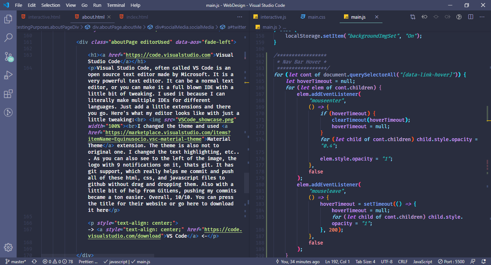

Source Code
You want to see the code behind this website? Well, it's your lucky day, because I am going to give you the source code for this website. I'm going to link the repository for this website and my github.
Before we start talking about libraries I used, we need to talk about what libraries are. Libraries are a code that people write to make coding essentially easier depending on the language they are writing. It's basically an extension or a mod to coding. There are a couple ways to apply a library to your code, but the one I'm using is a CDN (Content Delivery Network). So it essentially grabs the code online from a link and applies it to my code.
One of the most used JavaScript libraries. I learned a little bit of jQuery to help me make this website a lot easier to code. jQuery was made by John Resig on 2006 and it grew popularity. He created the library because he wants to make his website developing faster and easier. It basically makes pulling in elements from HTML to JavaScript easier and faster. It also uses the CSS selectors, which is very powerful by itself already. Here's and example of how jQuery makes your code shorter and easier to type
Without jQuery
var paragraph = document.getElementById("firstParagraph"); for (var i = 0; i < paragraph.length; i++) { paragraph[i].innerHTML("Changed The Text"); };
But With jQuery
$("#firstParagraph").text("Changed The Text");
It will do the same exact thing, which is change a text in a paragraph, but jQuery made it 3x faster. Here is the CDN I used for jQuery:
<script src="https://cdnjs.cloudflare.com/ajax/libs/jquery/3.5.0/jquery.min.js"></script>This one is easy enough and the name explains itself. It basically helps me make animation without me coding it myself through css. It's how everything just slides in or fades in when you scroll. It was created by michalsnik here is his github: https://github.com/michalsnik.
It is a very cool library that makes coding a lot faster. This one requires 2 CDNs, Here is the CDN I used for AOS:
JavaScript
<script src="https://unpkg.com/aos@2.3.1/dist/aos.js"></script>CSS
<link href="https://unpkg.com/aos@2.3.1/dist/aos.css" rel="stylesheet">
As the name says, it highlights syntax. You've seen most of it in action already. It highlights code snippets syntax, so it's easier to read for user that are viewing the snippets. It was made by a group of people, Lea Verou, Golmote, James DiGioia, Michael Schmidt, Jannik Zschiesche, Roman Komarov, and stellar. It makes this:
var paragraph = document.getElementById("firstParagraph");
for (var i = 0; i < paragraph.length; i++) {
paragraph[i].innerHTML("Changed The Text");
};
Into this:
var paragraph = document.getElementById("firstParagraph");
for (var i = 0; i < paragraph.length; i++) {
paragraph[i].innerHTML("Changed The Text");
};
Look at how the second one is highlighted, making it a lot easier to read and understand. This one also requires 2 CDNs:
JavaScript
<script type="text/javascript" src="https://cdnjs.cloudflare.com/ajax/libs/prism/1.20.0/prism.min.js"></script>CSS
<link href="https://unpkg.com/aos@2.3.1/dist/aos.css" rel="stylesheet">
Visual Studio Code, often called VS Code is an open source text editor made by Microsoft. It is a very powerful text editor. It can be a normal text editor, or you can make it a full blown IDE with a little bit of tweaking. I used it because I can literally make multiple IDEs for different languages. Just add a little extensions and there you go. Here's what my editor looks like with just a little tweaking:

I changed the theme and used Material Theme extension. The theme is also not to original one. I changed the text highlighting, etc... As you can also see to the left of the image, the logo with 29 notifications on it, thats git. It has git support, which really helps me commit and push all of these html, css, and javascript files to github without drag and dropping them. Also with a little bit of help from GitLens, pushing my commits became a ton easier. Overall, 10/10. You can press the title for their website or go here to download it here
-> Visual Studio Code <-
You want to see the code behind this website? Well, it's your lucky day, because I am going to give you the source code for this website. I'm going to link the repository for this website and my github.
GitHub is the free platform I used to deploy this website.GitHub was developed by Chris Wanstrath, P. J. Hyett, Tom Preston-Werner and Scott Chacon using Ruby on Rails which is another programming language. More info about GitHub's History here.It was eventually bought by Microsoft. Anyways, GitHub was made by the community, and they released their source code and engine, basically everything that runs GitHub, including Octicons. All the small icons you see in this website is from GitHub Octicons. They are simple, free and is in SVG format. It being in SVG format, that means resizing is very easy to do. Overall, they are really great to use.